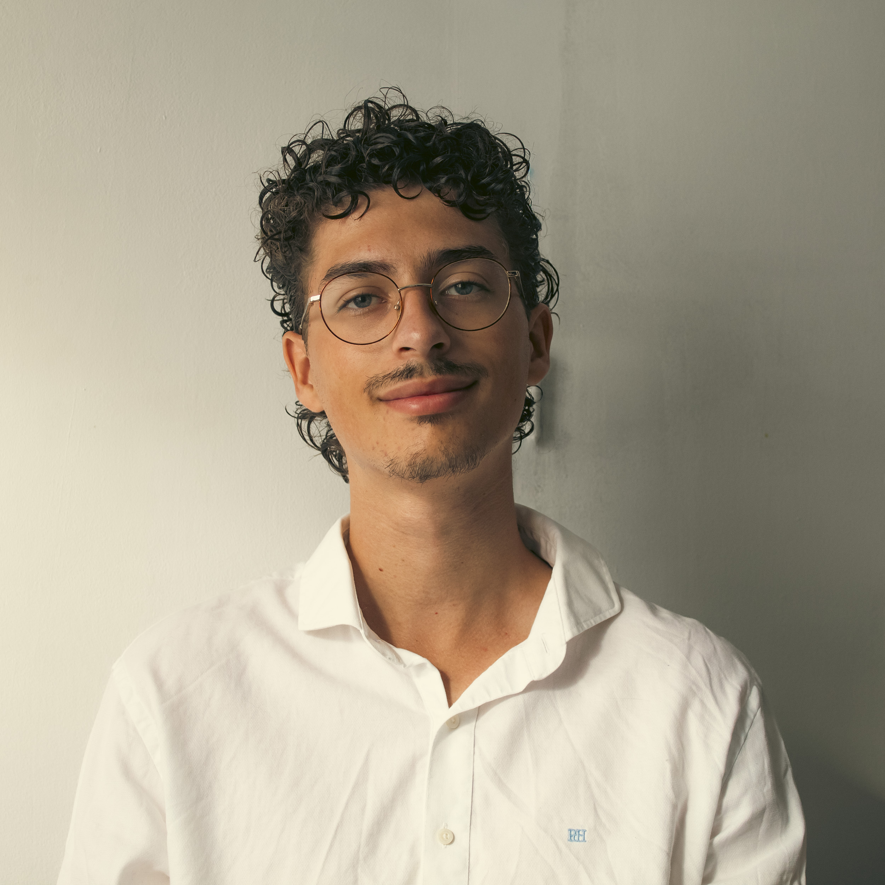
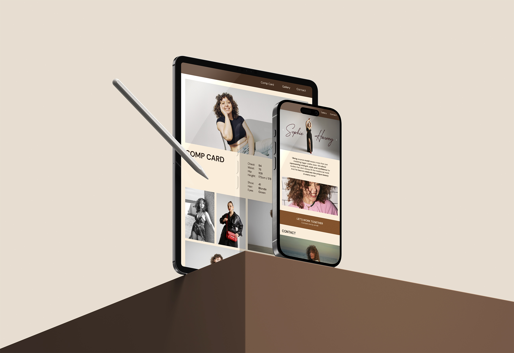
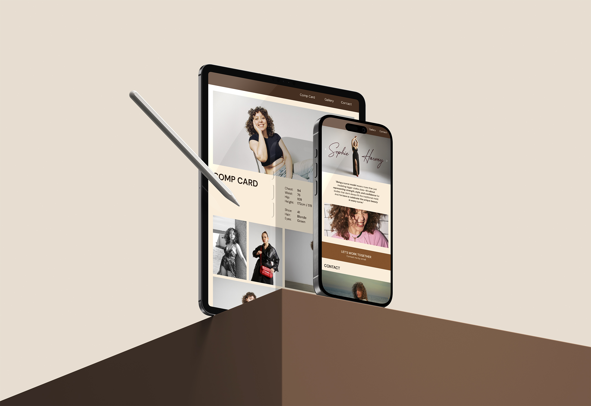
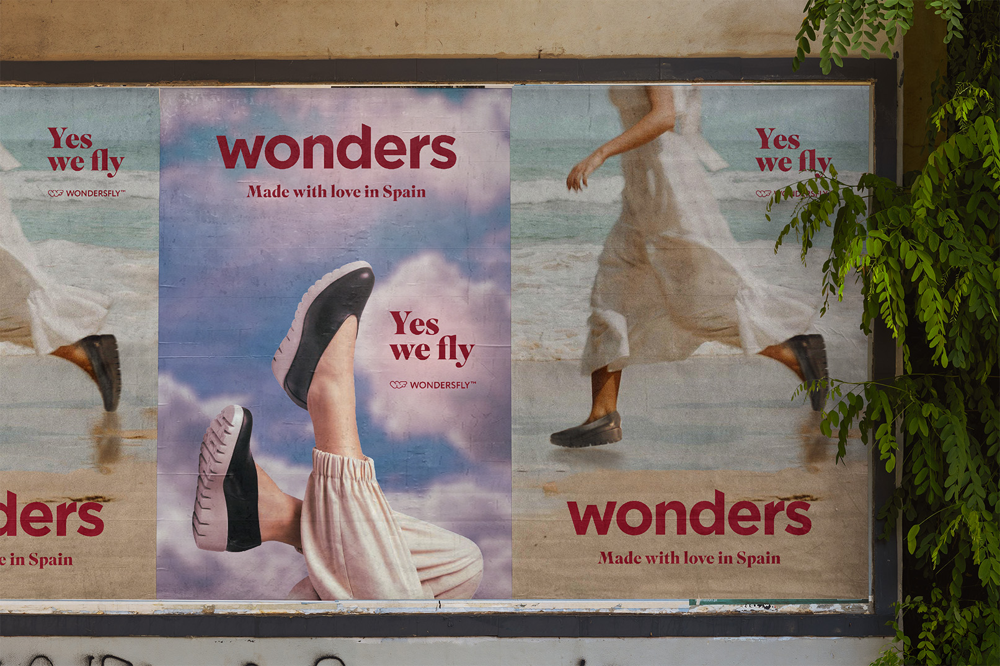
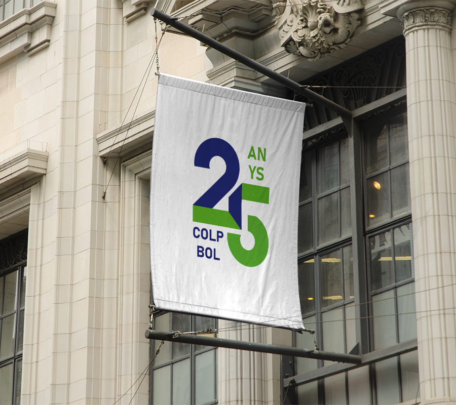

¡HOLA! SOY AARÓN RAYEN RICO , UN
DISEÑADOR GRÁFICO APASIONADO POR LAS ARTES
Y LA CREATIVIDAD. DISFRUTO
DISEÑANDO,
DIBUJANDO, PINTANDO, TOMANDO FOTOGRAFÍAS, BOCETANDO... , EXPLORANDO SIEMPRE NUEVAS FORMAS DE EXPRESIÓN.
HE COLABORADO CON
TALENTOS COMO LA PILOTO MAYA WEUG  O LA MODELO SOPHIE
HARVEY, LO QUE ME HA DADO
EXPERIENCIA REAL CON CLIENTES. SIEMPRE BUSCO APRENDER Y SUPERAR LÍMITES EN CADA PROYECTO.
O LA MODELO SOPHIE
HARVEY, LO QUE ME HA DADO
EXPERIENCIA REAL CON CLIENTES. SIEMPRE BUSCO APRENDER Y SUPERAR LÍMITES EN CADA PROYECTO.
HERRAMIENTAS
EDUCACIÓN
Grado en Diseño Gráfico
EASDA - Alicante
2022-
Bachillerato Artístico
IES Bellaguarda - Altea
2020-2022
EXPERIENCIA
Mi experiencia laboral se ha desarrollado principalmente como freelancer, colaborando con distintos clientes en proyectos creativos. He tenido la oportunidad de trabajar con Maya Weug, piloto oficial de Ferrari, diseñando pósters para sus redes sociales; con la fotógrafa Dani Whitehouse, creando su logotipo y publicaciones para Behance; y con la modelo Sophie Harvey, desarrollando su página web. Estas experiencias me han permitido crecer como diseñador y adaptarme a diferentes estilos y necesidades.
PREMIOS
Plata Premios Alce Jóvenes Diseñadores
Asociación 361º - Alicante
2025
Logotipo de los 25 años del Colpbol
Colpbol - Valencia
2023